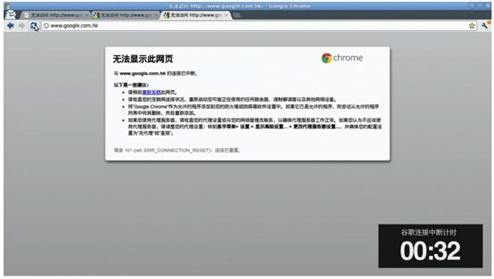

现代科技如何让你访问不了外网
论GFW的科技
欢迎来到我的教程!本教程将会带你来认识GFW
认识审查制度和梯子
首先，我们讲讲审查制度。审查制度叫做Great Fire Wall工程，简称GFW，又叫做中国防火长城，官方名为金盾工程，是由政府运作的一个互联网审查监控项目。在其管辖互联网内部建立的多套网络审查系统的总称，包括相关行政审查系统。 随着使用的广泛，GFW已被用于动词，GFWed是指被防火长城所屏蔽。
据纽约时报估算中国大约有6亿网民，相当于有36%的人在上网。而美国3.13亿人有78%的人在上网。相传在2005年中国网络警察人数就超过了30,000人。
那么下面为大家介绍一下什么样的网站最容易被封：
- 有政治敏感词的网站；
- 尴尬的新闻事件；
- 新闻报道网站；
- 异议分子讯息；
- 政治活动网站；
- 不喜欢的微博；
- 宗教网站；
- pxxxhub站
GFW的主要技术是什么？
1.国家入口网关的IP封锁从90年代初期，中国大陆只有教育网、高能所和公用数据网3个国家级网关出口，中国政府对认为具有颠覆性质的站点进行IP封锁，这是有效的封锁手段。对于IP封锁，用普通Proxy技术就可以绕过。只要找到一个普通的海外Proxy，然后通过Proxy就可以浏览自己平时看不到的资讯了。但网络封锁部门也就开始把人们常用的Proxy加入了IP封锁列表。
2.主干路由器关键字过滤阻断在2002年左右，中国大陆研发了一套系统，并规定各个因特网服务提供商必须使用。思科等公司的高级路由设备帮助中国大陆实现了关键字过滤，最主要的就是IDS（Intrusion Detection System）--- 入侵检测系统。它能够从计算机网络系统中的关键点（如国家级网关）收集分析信息，过滤、嗅探指定的关键字，并进行智能识别，检查网络中是否有违反安全策略的行为。利用这些设备主要进行网址的过滤和网页内容的过滤，如果符合即定的规则，则向用户发送ACK-FIN，自动打断用户与服务器的会话连接，使数据流中断，而在终端电脑上会显示主机无法识别。不同的IDS甚至有可能在一段预定或随机的时间内试图阻止从用户主机发出的所有通信。所以在访问境外网站时，如果数据流里敏感字符过多时，会出现网页一闪而过，随后提示“无法访问”的情况，例如Google。而且在接下来的一段时间内，有可能无法访问任何网页。
关键字过滤的弱点就是对已加密的信息无能为力，而网址的关键字和网页的关键字都可以用不同的手段来加密，从而使这样的信息过滤系统从根本上失去作用。不同的加密手段也是后来所有突破网络封锁软件的基础。 “思科公司为中国特制了数据包级别的内容过滤路由器（content filtering router），而中国的路由器80％是思科公司的。”正在进行中的“金盾工程”是一个与Novell的合作项目。这个工程将包括生化监控、人工智能、自动识别等技术。
3.域名劫持在世界上一共有十几个根（Root）级别的域名服务器，到目前没有一个安装在中国大陆，所以中国大陆方面不能从根本上控制修改域名。
防火墙是如何运作的
1.DNS封锁
当网民输入URL时，DNS会查找IP地址，如果DNS被设不返回IP地址用户就无法登陆网站。表现方式为：“找不到网站”全球一共有13组根(Root)级别的DNS服务器，目前中国大陆已有多台DNS镜像。但没有一组受中国大陆直接控制，所以中国大陆方面未能从根本上控制网站域名。
2002年左右，中国大陆开始采用域名劫持手段，他们用路由器提供的IDS监测系统来进行域名劫持，防止了人们访问被过滤的网站。同时，为了防止高级用户自己直接使用有正常功能的境外的域名服务器，中国大陆也开始不断地封锁海外的DNS服务器，已经封锁了几百个北美的DNS服务器。
2.连接阶段
监控电脑会将你的请求与被禁IP地址名单对照。如果属于被禁地址，服务器会中止请求。表现方式为“连接被重置”。
3.URL关键字封锁
尽管URL不在黑名单上，如果被请求的URL含有禁词，连接也会被重置。思科等公司的高级路由设备帮助中国大陆实现了关键字过滤，中国的路由器80%是思科公司的。表现形式为”服务器正在将请求重新定向“。
例如xjp.cc正是因为与国家领导人名字的类似，所以被墙了，被屏蔽过滤的关键词主要是、部分国家领导人姓名、境外媒体、色情、破网软件等字眼上。
4.页面扫描
一旦网民进入了你请求的网站，监控系统会扫描整个网页，判断是否可以通过。导致用户可能在几分钟甚至是一小时内无法连接该网站，表现形式为”无法显示网页“。比如Gmail。
从GFW的分布来看，审查过滤系统主要位于国际出口处，但最近通过对审查过滤系统返回的RST复位包IP头进行(TTL值)分析，发现存在两个欺骗源，其一位于国际出口处，另一个位于骨干网省级接入处。因此推测GFW对于境内的非法内容也具有一定审查能力。值得提到的是，对于境内网络内容的审查主要是通过ICP备案来实现的。
如你在中国国内，请还是购买中国大陆的服务器主机空间这怎打开速度快也不会被中国长城防火强屏蔽。windows电脑防火墙设置，防火墙在哪里开启关闭